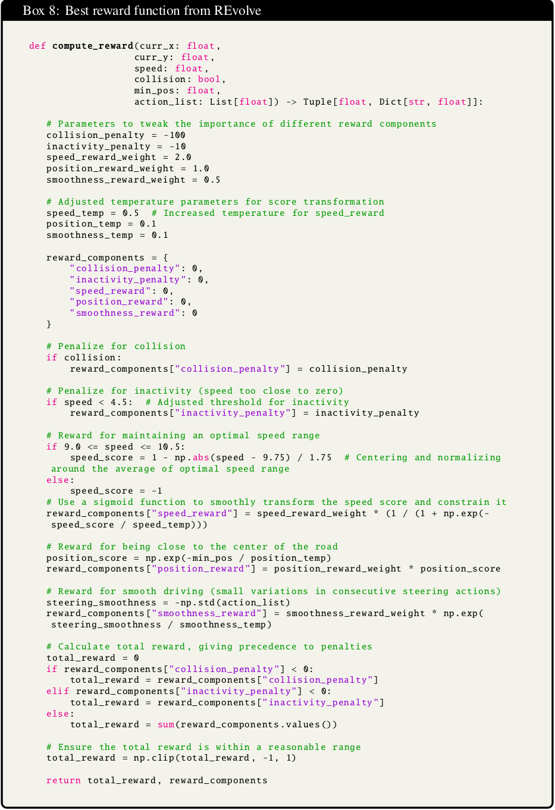
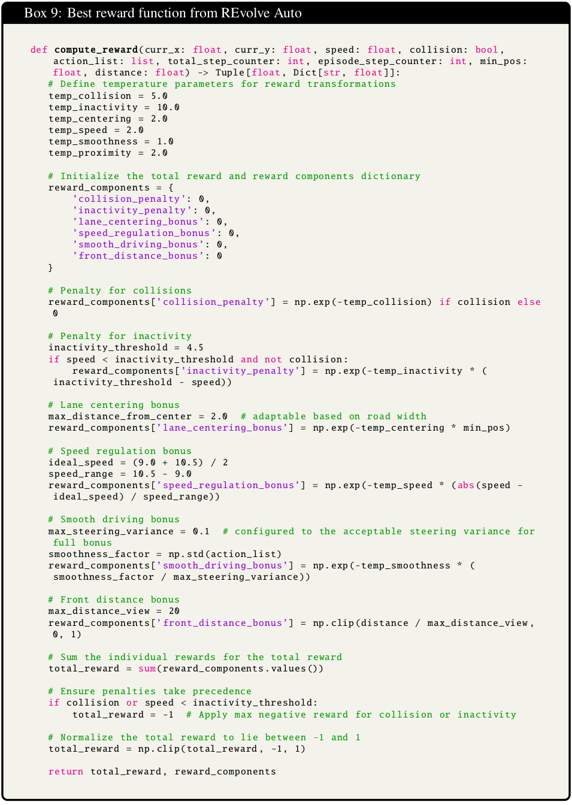

Results
How does REvolve fair against the baselines?
REvolve exhibits continuous improvement across successive generations, ultimately achieving a higher fitness score on the manually designed fitness scale.
How do humans judge REvolve policies?
REvolve policies are ranked the best amongst other baselines.
How do different genetic operators impact overall performance?
REvolve with mutation + crossover > REvolve with crossover > REvolve with mutation
Do REvolve-designed reward functions generalize to new environments?
In two novel environments -- (Env 1) featuring lanes and a completely altered landscape,
and (Env2) characterized by increased traffic with multiple cars actively maneuvering -- REvolve outperforms expert-designed rewards.
Human Driving
REvolve
REvolve Auto
Eureka
Eureka Auto
REvolve
REvolve Auto
Eureka
Eureka Auto
Expert Designed
REvolve
REvolve Auto
Eureka
Eureka Auto
Expert Designed


Best (based on fitness evaluations) reward functions \(R^\ast\) from REvolve and REvolve Auto. It can be observed that each reward function component and their aggregation is interpretable. Hence, they can be scrutinized and tweaked if necessary to meet safety standards.